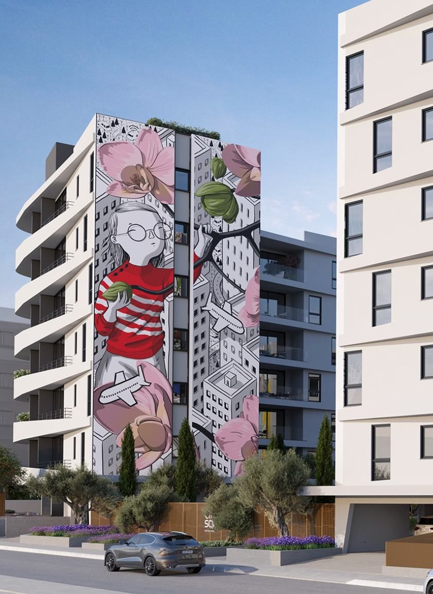
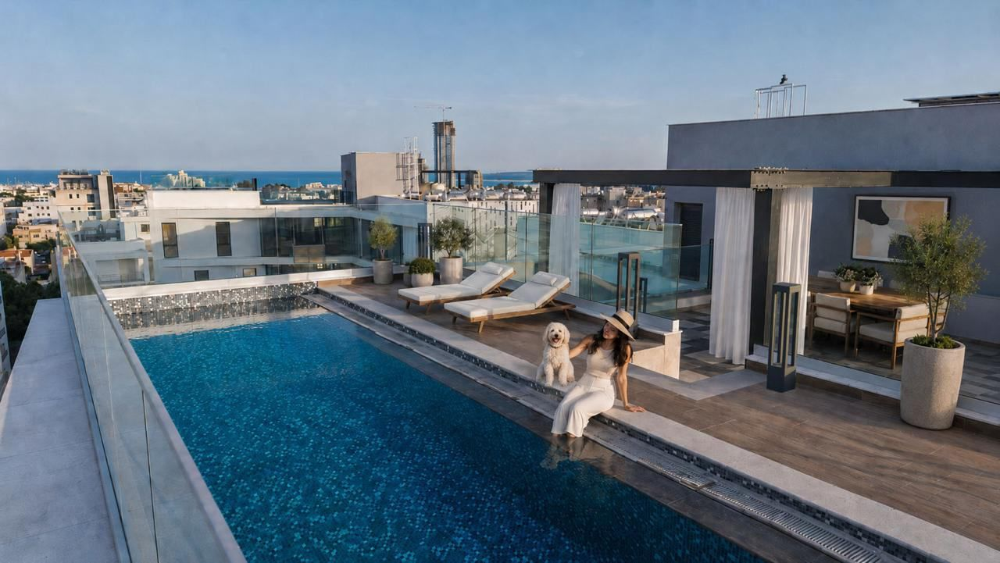
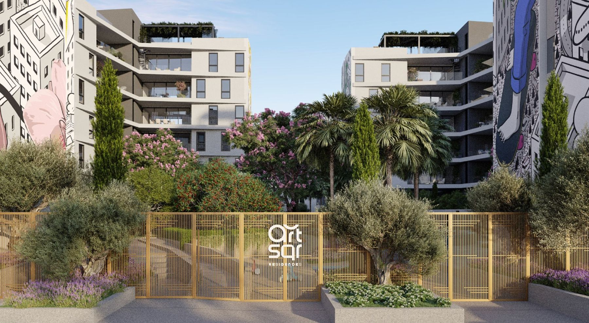
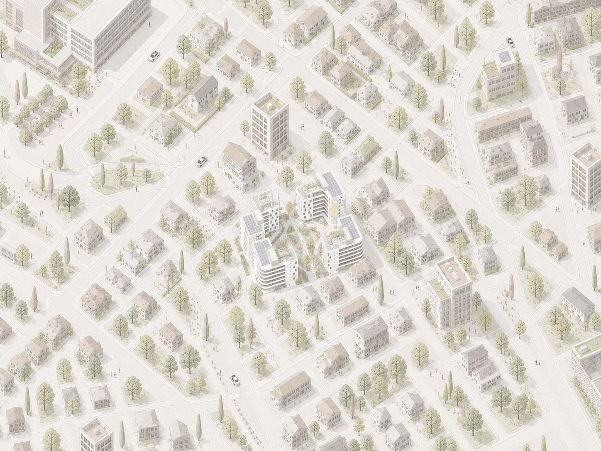

The project & the district
ArtSqr is a boutique residence of just twenty-four homes, organised around a 1,700 m² private courtyard and a permanent mural by the artist Millo. It is developed by Makespace Development as a single, considered gesture rather than a stack of units.
Every residence — from the one-bedroom to the 250 m² penthouse — shares the same architectural identity: floor-to-ceiling glass, quiet building systems and direct access to the courtyard at the heart of the block.
The neighbourhood sits within walking distance of Limassol's Old Town — a quarter shaped over centuries by traders, churches and the sea. Narrow streets of the Church mile give way to the marina and the seafront promenade, while a short drive reaches international schools, the airport and the wine country inland.
Once a working district of warehouses and workshops, it has become one of the city's most quietly desirable addresses — central, walkable and connected, yet residential in character.




Indicative map · to be redrawn